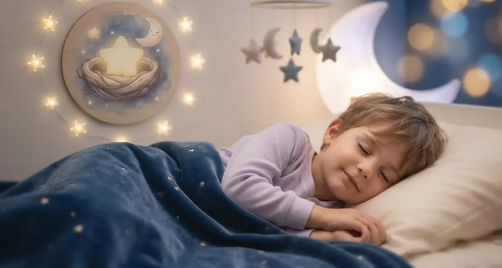

Detrás de este Nido
Un espacio creado con vocación de servicio, calma y cero ruido comercial.
El origen real
Este proyecto no nació en una oficina de marketing ni responde a un plan corporativo. Nació de la forma más natural del mundo: observando de cerca el día a día de las familias, escuchando las pequeñas dudas cotidianas y viendo qué es lo que de verdad alienta a un hogar cuando cae la noche.
Aunque no soy padre, mi rol de tío me ha permitido compartir risas, abrazos, miedos nocturnos y descubrimientos con los más pequeños. Esa cercanía me enseñó algo fundamental: los niños no necesitan estímulos estridentes antes de dormir; necesitan refugio, paciencia y relatos que validen lo que sienten.
Con el tiempo, entendimos que nuestra misión no podía limitarse únicamente al momento de ir a la cama. Las familias necesitan respuestas, guías rigurosas y apoyo práctico ante los grandes retos del desarrollo y la salud infantil. Así, El Nido de Estrellas ha evolucionado para convertirse también en un directorio de ayuda integral, abordando de forma cercana y profesional los temas más importantes de la infancia.

Nuestros pilares fundamentales
Cada cuento, guía de salud y recurso que publicamos se rige estrictamente por un firme compromiso de apoyo a las familias:
💙 Gestión Emocional
Convertimos los miedos cotidianos y la frustración en historias comprensibles donde cada emoción del niño es escuchada y validada.
🌙 Higiene del Sueño
Estructuramos las narraciones con un ritmo pausado, integrando respiración y calma para preparar el cerebro de forma natural para el descanso.
📚 Apoyo Integral a Familias
Ofrecemos guías rigurosas y accesibles sobre salud, neurodesarrollo y bienestar, brindando a los padres herramientas útiles para cada etapa de la infancia.
Un refugio digital consciente (Slow Web)
En El Nido de Estrellas creemos que el mundo digital, al igual que el entorno en el que crecen los niños, necesita espacios de calma. Por eso hemos concebido este proyecto bajo los principios de la Slow Web: una forma de diseñar y programar más humana, respetuosa y sostenible.
🌿 Sin sobreestimulación
Aquí no encontrarás ventanas emergentes (pop-ups) intrusivas, vídeos automáticos ni distracciones ruidosas. Solo un espacio limpio para leer y reflexionar en paz.
⚡ Bajo consumo
Cada línea de código y cada imagen está optimizada para cargar al instante y consumir los mínimos recursos. Menos peso en la red es un menor impacto en nuestro planeta.
🌙 Cuidado visual
Nuestros tonos oscuros no solo evocan la magia de la noche; también están pensados para cuidar la vista y reducir el consumo energético de las pantallas al acostar a los niños.